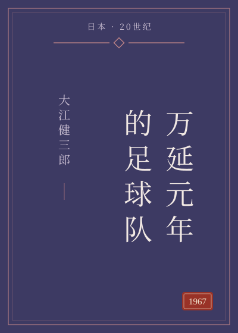
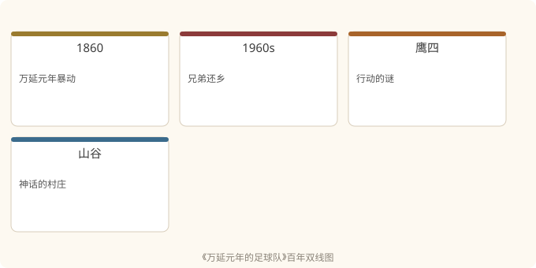

万延元年的足球队
一、基本信息
| 作者 | 大江健三郎 |
|---|---|
| 成书/出版 | 1967年出版（作者页 B167 口径：万延元年的足球队（The Silent Cry，1967）） Kenzaburo Oe — Encyclopaedia Britannica（百科全书） |
| 国别/地区 | 日本 |
| 时代 | 现当代 · 20世纪 |
| 体裁 | 长篇小说 |
| 语言 | 日语 |

《万延元年的足球队》百年双线图（主题·结构图）
二、创作背景
作者页（B167）：大江健三郎 major_works 载'万延元年的足球队（The Silent Cry，1967）'（B167 作者页定位，详见 gerende 条核对）。
大江为1994年诺贝尔文学奖得主（作者页定位）。
三、内容脉络
蜜三郎与鹰四回到四国山谷村庄——百年前的农民暴动（万延元年，1860）与当下青年之死（通说待核）。
'超级市场'与村落的对峙（通说待核）。
四、主要人物表
| 人物 | 身份 | 说明 |
|---|---|---|
| 蜜三郎 | 兄 | 旁观者（通说待核） |
| 鹰四 | 弟 | 行动者（通说待核） |
| S | 曾祖父之妹 | 百年前的暴动女杰（通说待核） |
五、主题与艺术特点
- 百年暴动的双重回响（通说）。
- 村落神话与'核'的外来（通说待核）。
- 残障、罪与共处（通说——大江主题）。
六、影响与评论
- 作者页：大江代表作（B167 作者页口径）。
Kenzaburo Oe — Encyclopaedia Britannica（百科全书） - 获谷崎润一郎奖（1967年——通说待核）。
Kenzaburo Oe — Encyclopaedia Britannica（百科全书）
七、阅读建议
难点
- 百年双线。
- 山谷方言与神话。
- 《万延元年的足球队》（光明日报出版社/人民文学出版社版本，通说待核）。
- 英译 The Silent Cry。
先《个人的体验》后本作。
八、待核实
- 1967年出版（讲谈社说）核对。
- 蜜三郎/鹰四/S人名核对。
- 谷崎润一郎奖核对。
本页主要来源
大江健三郎的其他收录作品：个人的体验